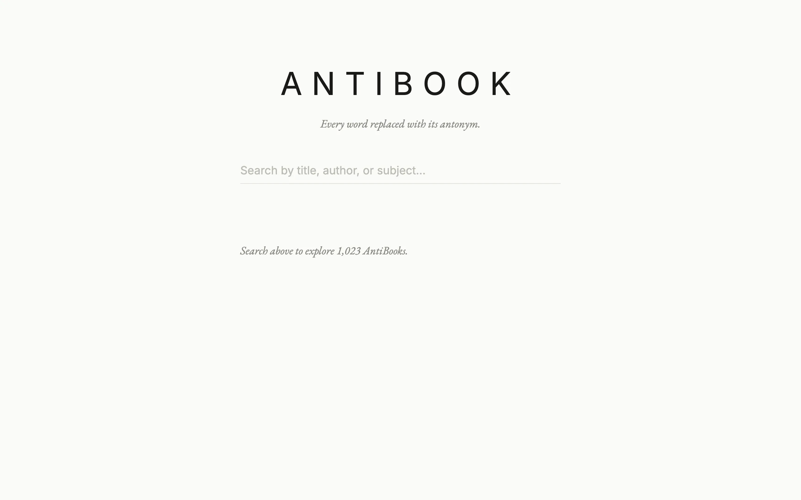

Antibook takes books from the Project Gutenberg catalog and replaces every word it can with an antonym. Sentence structure survives, the meaning flips, and the output is absurd in a way I find more readable than it should be. You search the catalog, pick a book, and read the inverted version, with a compare mode that puts the original alongside.
Finding the opposite of a word sounds simple until you try it on every word in a novel. "Hot" is "cold". But what's the opposite of "Tuesday", or "the", or "Ebenezer"? Most words in a sentence have no opposite. So the job is to invert what can be inverted, leave the rest alone, and keep the rhythm.
Building the antonym map
The map has 27,507 entries and is built in tiers, each one only filling words the previous tiers missed. The first is a hand-curated file of 1,153 pairs, the obvious ones: good/bad, up/down, love/hate, yes/no. The second pulls direct antonym relations out of WordNet via NLTK, taking the most frequent sense and skipping any multi-word antonym, since those can't substitute one for one. That adds 5,953 words. The third is the Moby Thesaurus: for a word with no antonym yet, look at its synonym cluster, and if one of those synonyms has a known antonym whose own synonyms overlap the cluster, take it. That's the big one at 19,204 words, and it's also where the nonsense comes from. "Time" resolves to "rejuvenate" and "times" to "death". A ConceptNet tier adds 1,199 more from its antonym relation, cached to disk so the API is only hit for new words. There's an optional GloVe tier that scores candidates by embedding similarity, but it needs a 1 GB download and the map in the repo was built without it. Anything left over stays as itself.
Applying the map is its own pass. Each book is POS-tagged, and proper nouns (an NNP tag, or a capital letter anywhere but sentence start) are skipped along with a list of function words: articles, pronouns, prepositions, auxiliaries, "not" and "no". Contractions are looked up whole. Everything else is lemmatized, looked up, and re-inflected, with a Lesk pass over an 8-word window when a word has senses with different antonyms and a British-to-American spelling fallback when the lemma misses. Because "was" is on the preserve list and "times" maps to "death", the Dickens opener comes out as "It was the worst of death, it was the best of death", not the tidier "wasn't the worst of places" the README promises. I should fix the README.
Three workflows
Everything runs on GitHub Actions. One manual workflow rebuilds the antonym map. A weekly one, Sunday at 04:00 UTC, asks Gutendex for the 500 most-downloaded English titles, downloads any it hasn't seen, strips the Gutenberg header and footer, transforms them, chunks each book into 20,000-character JSON pieces, and builds a catalog for Fuse.js to search on the client. It restores the previous dist/, the raw book cache, the pip cache, and the NLTK data from the Actions cache so a weekly run only touches new books, then uploads dist/ as an artifact. A third workflow fires on that run's completion, downloads the artifact by run id, bundles the front end, and deploys to GitHub Pages. If someone triggers the deploy by hand, it finds the latest successful build run and uses that artifact instead. None of this has tests.
What comes out
Dialogue tags still say "he said" because "he" is preserved, though "said" itself becomes "unarticulated". Character names persist. Within the skeleton, adjectives, verbs, and adverbs flip. Brave characters are cowardly, daylight scenes happen at night, love stories become hate stories. Dickens works well because his prose is emotionally loaded, so the inversions land. Technical writing is dull because flipping clinical language produces more clinical language.